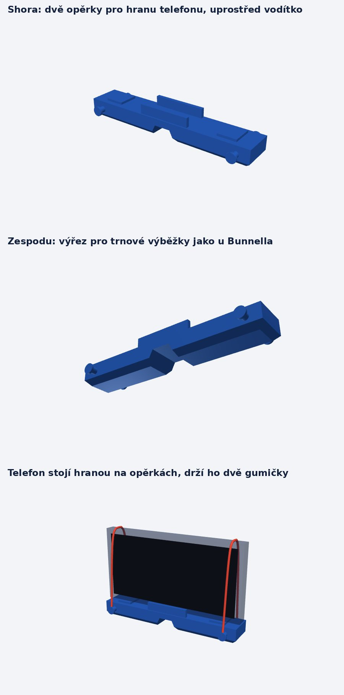

Nástavec s výřezem pro trny
Telefon stojí hranou na dvou opěrkách a drží ho dvě gumičky. Nástavec se přikládá na záda jako Bunnellův skoliometr, výřez uprostřed přeskočí trnové výběžky. Na krytu telefonu nezáleží: měřený sklon určují jen dvě opěrky a náklon telefonu k vám nebo od vás aplikace nevnímá.
Stáhnout model pro 3D tisk (STL)

Rozměry
| Délka × hloubka × výška | 150 × 26 × 16 mm (s vodítkem 24 mm) |
| Výřez pro trny | dole 24 mm, nahoře 14 mm, hloubka 10 mm |
| Vodítko pro telefon | světlost 17,5 mm, stačí i pro silný kryt |
| Opěrky | 2 × 16 mm, 46–62 mm od středu, vysoké 2 mm |
Tisk
- PLA nebo PETG, vrstva 0,2 mm, výplň 20–30 %. Tiskne se ležící na spodní ploše, jak je na prvním obrázku.
- Výřez se vytiskne jako most, podpěry nejsou potřeba. Pouze pokud tiskárna nezvládne knoflíky na bocích, zapněte podpěry jen pro ně.
- Kdo nemá tiskárnu, pošle soubor STL do tiskové služby.
Použití
- Postavte telefon na šířku hranou na opěrky, displejem k sobě. Tlačítka na hraně ať nejsou na opěrce (u iPhonu 13 Pro dejte dolů pravou hranu s bočním tlačítkem).
- Přes horní hranu telefonu natáhněte dvě gumičky do vlasů, zahákněte je za knoflíky vpředu a vzadu.
- V aplikaci udělejte kalibraci nuly s telefonem v nástavci (nástavec stojí na stole, pak ho otočíte dokola). Po výměně krytu nebo telefonu ji zopakujte.
- Kalibraci úchopu (palce) při měření s nástavcem zrušte, prsty už pod telefonem nejsou. Nástavec držte za konce.
Model je parametrický (build_adapter.py), rozměry se dají snadno upravit.